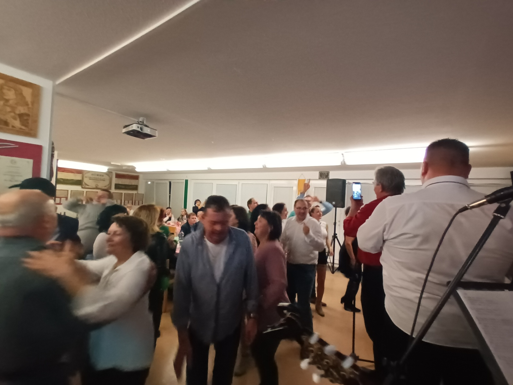
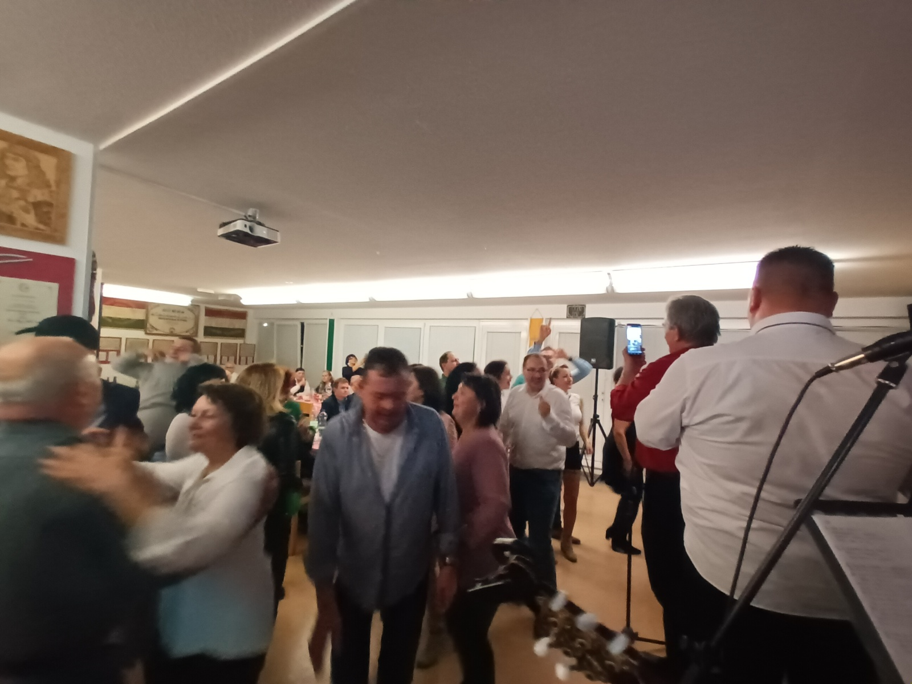
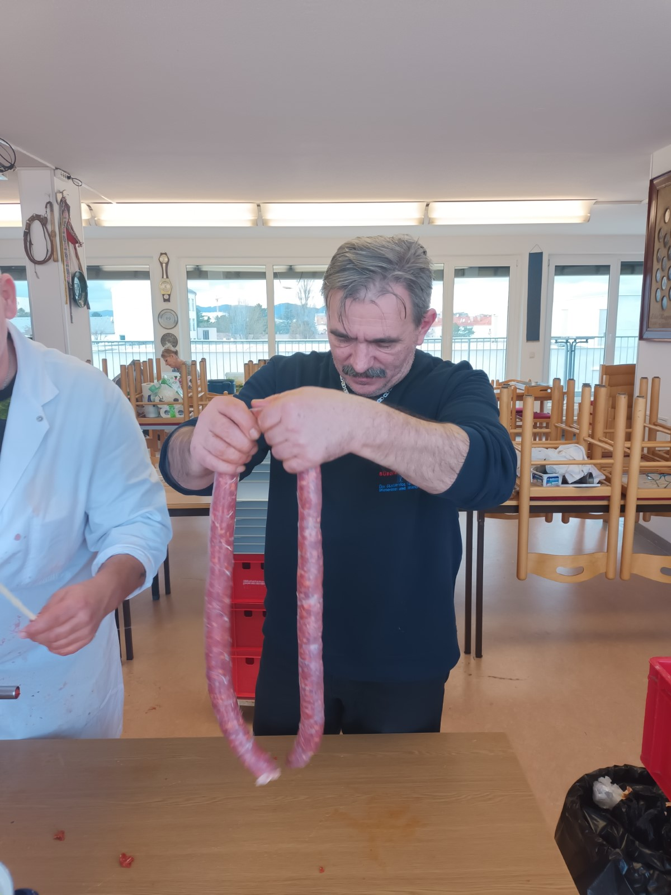
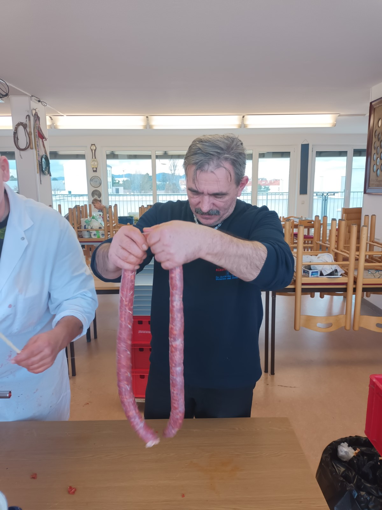

Bécsi Magyar Munkás Egyesület (BMME)
Üdvözöljük a Bécsi Magyar Munkás Egyesület (BMME) honlapján! Ausztria egyik legrégebbi magyar egyesületeként 1899 óta szolgáljuk a bécsi magyar közösséget. 2019-ben ünnepeltük 120. évfordulónkat, és azóta is hűek maradtunk küldetésünkhöz: a magyar nyelv, kultúra és hagyományok ápolásához. Jelenleg mintegy 300 aktív tagunk van, akik havi rendszerességgel 80-90 baráttal találkoznak székházunkban, a Hirschstettnerstrasse 19-ben. Itt, a "magyar házban" otthonra lelhet minden dolgozó ember, aki kikapcsolódásra vágyik, és a magyar virtust szeretné átélni.


Rólunk
A BMME több mint egy egyesület – egy valódi közösség, ahol a magyar hagyományok és a barátság találkoznak. Székházunk rendezvényterme ideális helyszín 80-90 fős összejövetelekhez, és rendszerint teltházas eseményeket tartunk. Egy 6-7 fős csapat fáradhatatlanul dolgozik, hogy minden találkozó felejthetetlen legyen. Legyen szó gulyásfőző versenyről – ahol a Szolnoki Gulyásfesztiválon harmadik helyet értünk el – vagy egy nagyszabású Gulaschfestivalról a Donauparkban, nálunk a gasztronómia és a zene mindig kéz a kézben jár. “Azért csináljuk, mert szeretjük” – vallja Kancsár László, és ez az elhivatottság tartja életben a BMME szellemét.
Tagosodj!Galéria
Tekintse meg képeinket korábbi rendezvényeinkről, ahol a magyar virtus és a közösségi öröm mindig főszerepet kapott! További képek a gulyásfesztiválunkról


 



 



1. BÉCSI KOLBÁSZTÖLTŐ VERSENY
Magyar sültkolbász verseny – élő látvány!
2025. december 6. | 07:00 – 15:00
Hirschstettner Straße 19, Bécs 22. kerület, Block A
Kolbásztöltő Verseny | Házikonyha | Forraltbor | Magyar Néptánc | Tamburazene | Szórakoztató Zene
Bejelentkezés
30€ bejelentkezési díj
Tartalmazza: 1 sörasztal garnitúrát és helypénzt
3x3 méter pavilon
Élő program
Házikonyha, forraltbor, magyar néptánc, szórakoztató zene és tamburazene.
Vacsora
Mint minden évben este 19 órától Hagyományos Disznótoros vacsora egyesületünk termében A Tisza tambura zenekar kiséretében valamint Délvidéki Táncbemutató Lukács Adrien-el és "Röske"Resócki Rolland-al! Tagoknak 35€ Nem tagoknak 45€
Magyar „kolbászkészítő verseny” Bécsben
Betekintés a disznótor évszázados hagyományába
Ez a magyar hagyomány, évszázadok óta az adventi időszak jellemzője volt a vidéki lakosok körében. Disznóölés alkalmával összefogott a család, barátaik, szomszédaik, hogy az egész évben gonddal nevelgetett disznót leöljék és feldolgozzák, így biztosítva a közelgő karácsonyi és újévi ünnepek lakomáját. Hagyományosan ezt a napot, a böllérek és segítőik házi magyar pálinkával kezdték. Felvértezve magukat a hideg ellen és a jó hangulatra. Az üdvözlő pálinka után megkezdődhetett a munka. Az állat vérének felfogása után jött a bőrének pörkölése, majd a húsának szétszedése. Ezután került sor a különböző töltelékes finomságok készítésére mint a: disznósajt, hurka, kolbász, szalámi. A serényen dolgozó férfiak energia pótlásáról az asszonyok gondoskodtak. Sütt vér - tokaalja, -máj formájában. Majd este a megfeszített munka után tort ültek. Volt ott minden jó: savanyú leves belsőségekkel, sültek, kóstoló az elkészített hurkából, kolbászból. Édességként pedig hájas kifli a friss hájból.
Mi, BMME mint a magyar kultúra képviselői, felhívjuk a figyelmet mindazok számára kiknek fontos gyökereink megőrzése, tradíciónk ápolása. Szeretnénk egy a disznótor témához kapcsolódó versenyt hirdetni, Disznótoros kolbászkészítő verseny címszó alatt, ahol elődeink örökségét igyekezünk tovább életben tartani.
Helyszín - Hirschstettner Straße 19, Bécs 22. kerület, Block A
Programunk:
- 07:00 – 08:00 Disznótoros kolbászkészítő verseny – gyülekező
- 8:00 – a verseny indítása
- 13:00 – az elkészítés idő vége
- 14:00-15:00 - az eredmények ünnepélyes kihirdetése
Belépések:
30€ - Regisztrációs díj csapatunként. Tartalmazza: 1 sörasztal garnitúrát, helypénzt és egy 3x3 méteres pavilont.
19:00 - Disznótoros vacsora a BMME székhelyén. Tagoknak 35€, Nem tagoknak 45€.
Részletek:
A 7:00 órai gyülekező után a csapatok elfoglalhatják helyüket a számukra biztosított sörasztalok mellett. 8:00 órakor indul a verseny. A csapatok saját ötletük alapján, vagy a régiójuk hagyományát követve mint ahogy a közmondás is mondja "Ahány ház annyi szokás" alapon elkészítik finomságaikat - reggeli; hurka; kolbász lehetőség szerint!
13:00 – a kész kolbászok, hurkák szakmai zsűri elé kerülnek
14:00 - 15:00 eredményhirdetés
Az egész napi munkát egy kulturális program kíséri, magyar zenével és a Bécsben működő valamint vendég táncosok-tánccsoportok lélekemelő táncbemutatójával.
A benevezési díj 30€ tartalmaz:
- Sörpad garnitúra
- 3x3 méteres Pavilon
- Főző-sütőhely
A Gulyásfesztivállal eltérően ennél a rendezvénynél a csapatok kizárólag saját alapanyagból készíthetik a kolbászt; hurkát stb. Az előkészítéshez szükséges eszközöket a csapatoknak kell hozni!
Ami még nem elhanyagolható: Az idelátogató kedves érdeklődők nem csak figyelmükkel követhetik a finomságok készülését, hanem a számukra felállított állófogadási asztaloknál ők is fogyaszthatják a megvásárolt étkeket, italokat.
Mindenkit szeretettel várunk! Legyen az kicsi vagy nagy, magyar vagy más ajkú, akit érdekel ez a régi magyar hagyomány a hozzá tartozó ízvilággal. Gyere el, ülj közénk, hogy többen legyünk! Hiszen megismerve a sokszínűséget, egymás szokásait, kultúráját elfogadóbbá válhatunk ebben a kaotikus rideg világban.
Figyelem!
!!!Külön bejelentkezéssel!!!
Mint minden évben este 19 órától Hagyományos Disznótoros vacsora egyesületünk termében a Tisza tambura zenekar kíséretében valamint Délvidéki Táncbemutató Lukács Adriennel és "Röske" Resócki Rolanddal!
Tagoknak 35€
Nem tagoknak 45€
BMME vezetősége
Helyszín
Hirschstettner Straße 19, Bécs 22. kerület, Block A
Szervezők
BMME 1899 | Bundeskanzleramt
Jövőbeli Események
2025-ben is izgalmas programokkal várjuk barátainkat! A részvétel tagoknak 35 €, nem tagoknak 45 €, ami egy négyfogásos vacsorát és egy üdvözlő italt foglal magában. Jegyeinket érdemes időben lefoglalni, mert gyorsan elfogynak!
Disznótoros Vacsora – 2025. December 6.
December 6-án egy hatalmas disznótoros vacsorával várjuk vendégeinket székházunkban. A Péterrévei Tisza Tambura Zenekar szolgáltatja a hangulatot, miközben igazi magyaros ízeket kóstolhatunk meg. Jelentkezni Kancsár Lászlónál lehet november 20-ig a +43 699 1909 2586 telefonszámon.

Archívum
Fedezze fel korábbi rendezvényeink archív anyagait és emlékeit! Itt találja helyét minden múltbéli eseményünknek.
Üdvözlünk a BÉCSI MAGYAR MUNKÁS EGYESÜLET (BMME) Honlapján!
Az 1899-ben alakult egyesületünk és az egyik legidősebb magyar egyesületként szolgálja a bécsi magyarok közösségét Ausztriában.
Hűen követjük küldetésünket miszerint
- ápoljuk hagyományainkat nyelvünk, zenénk, szokásainkon keresztül.
- valamint, igyekszünk mindezeket az értékeket bemutatni sokszínű nemzeti környezetünknek, Bécsnek.
Gyere el hozzánk, hogy mindezeket az értékeket közösen védjük, ápoljuk és adjuk át az új nemzedéknek!
RÓLUNK
Az alapítók a 21. Kerületi Floridsdorfi mozdonygyár munkásai voltak. Lelkesedésükkel gyorsan maguk köré gyűjtötték a magyar érzelmű embereket. Az elmúlt 126 év alatt sokat változott a társadalom, új kihívások elé állította egyesületünket is, lelkesedésünk azonban töretlen!
Az utóbbi néhány évben új szerkezeti, szervezeti formával, de gyökereink szilárd megtartásával, kultúrális értékeink megőrzésével igyekszünk helyt állni rohanó felületes világunkban!
A BMME több mint egy egyesület! Ez egy valódi közösség, ahol a magyar hagyomány értékeinek megőrzésén túl, barátságok, családpótló kapcsolódások jönnek létre!
Székházunkban (1220-Hirschstettner Straße 19 Block A 3. emelet) havi rendszerességgel vannak találkozók!
A tematikus estek mint karácsonyi ünnep, anyák-, nők napja, operett gála, disznótoros est mellett zenés, táncos mulatságokat is tartunk amit nagy érdeklődés fogad. 2010 óta rendszeresen minden évben megszervezzük egyesületünknek kétségkívül a legkedvesebb és legnagyobb rendezvényét a „Gulyásfesztivál"-t! A fesztivál lényege és célja a hagyományos magyar marhapörkölt illetve magyar konyha megismertetése a fiatal nemzedékkel, valamint más nemzetek gasztronómiai kultúrájával.
Itt a Magyarházban otthonra lelhet minden dolgozó ember, aki kikapcsolódásra vágyik, és meg szeretné élni a magyar virtust. Kapcsolódj hozzánk te is!